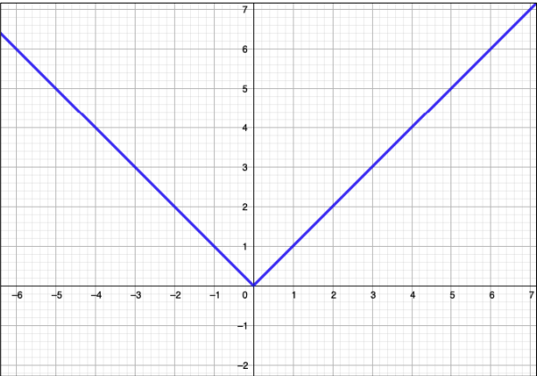

Funções Modulares
Funções modulares, também conhecidas como funções matemáticas modulares, são conceitos fundamentais em matemática, especialmente na teoria dos números. O módulo de um número real 𝑎, representado por |𝑎|, é basicamente a distância desse número até zero na linha numérica. Já que calcular distâncias sempre resulta em valores positivos, o módulo também será um valor positivo.
Assim: | + 2| = 2
| − 2| = 2
Quando há uma variável dentro do módulo, é importante lembrar que o valor dessa variável pode ser tanto positivo quanto negativo. Ex:
| x | = 3
Ou o X é -3, ou +3
Gráficos de Funções Modulares:
Observe os dois gráficos dsa funções 𝑓(𝑥) = |𝑥| e 𝑔(𝑥) = 𝑥
Podemos perceber que a parte negativa da função g(x) é refletida
Etapas para construir um gráfico:
1º) Fazer o gráfico da função que está dentro do módulo. 2º) Refletir a parte que tem y negativo para y positivo. 3º) Se tiver algum número somando ou subtraindo fora do 4º) Se a função modular cruzar o eixo x em outros valores, basta igualar a função a zero e encontrar as novas raízes.